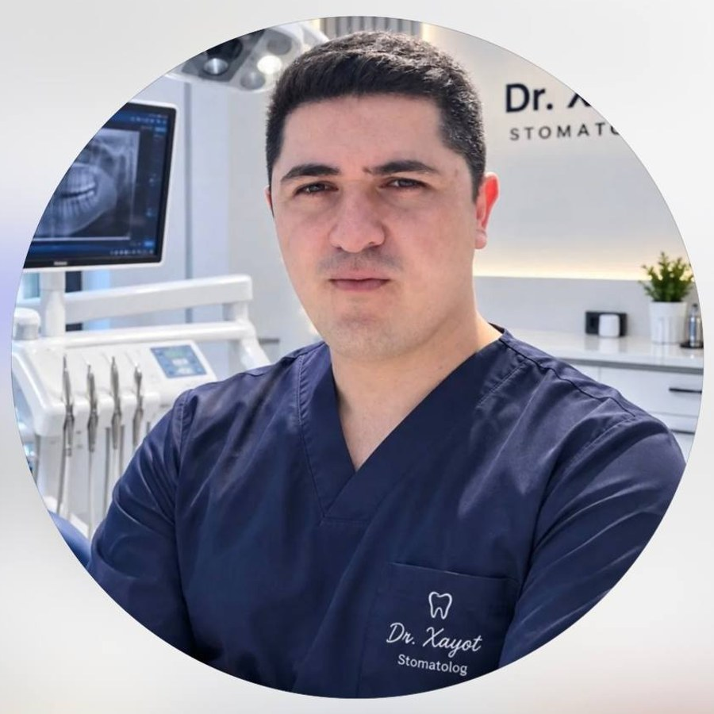
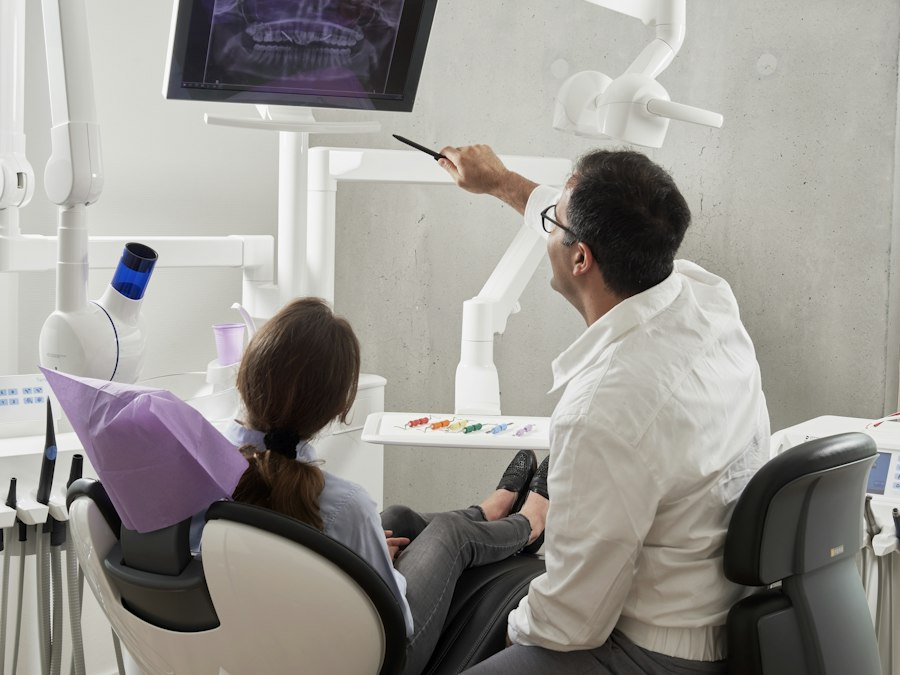
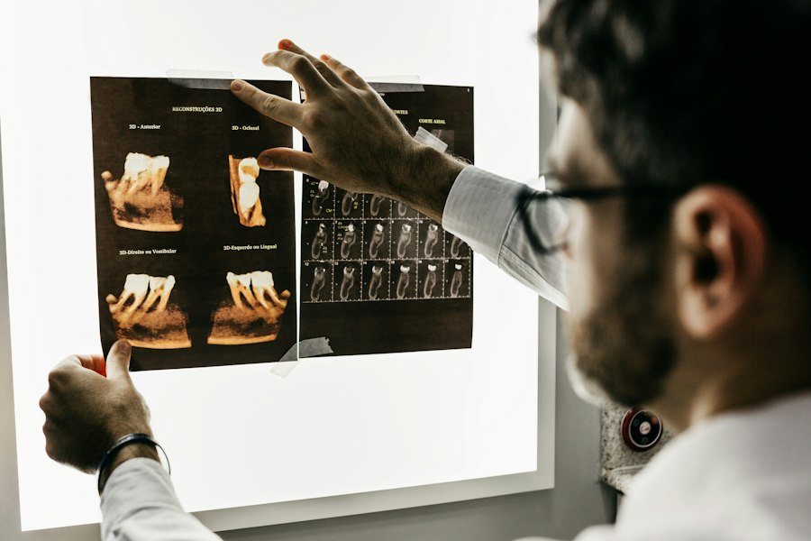
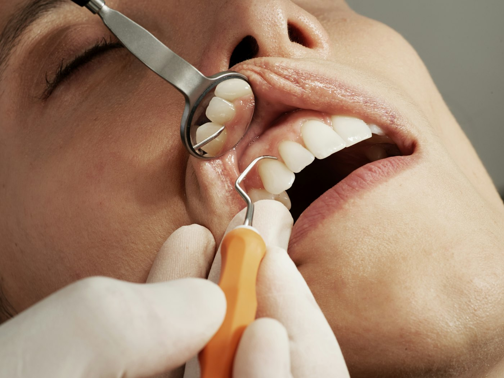
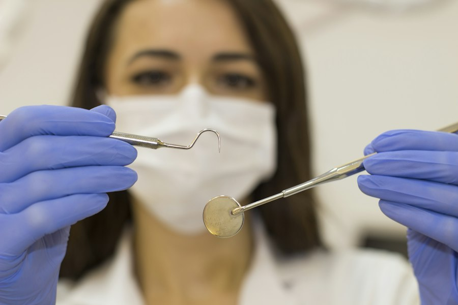
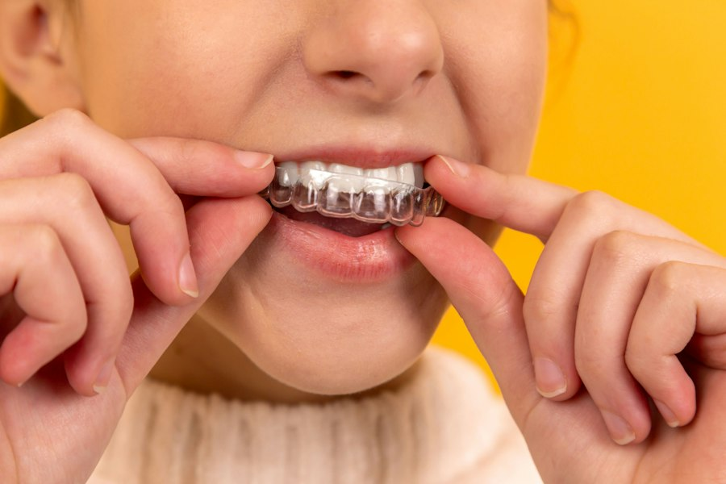
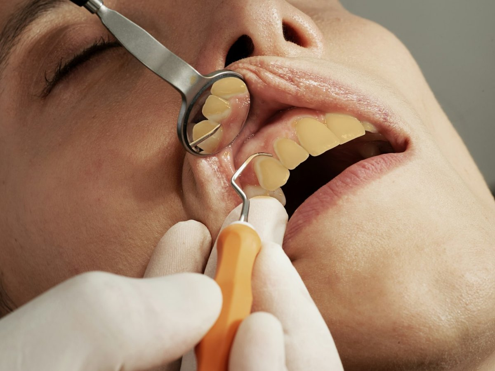

Xirurg stomatolog · IIV Stomatologiya poliklinikasi
Sog'lom tish — go'zal tabassum!
Implant, plomba, professional tozalash, tish sug'urish va protez. Og'riqsiz, ehtiyotkor va har bir bemorga alohida e'tibor bilan.
- 8+yillik tajriba
- Bepulmaslahat
- Sterilkabinet



Shifokor haqida
Tishingiz ishonchli qo'llarda
Dr. Xayot — IIV Stomatologiya poliklinikasida ishlovchi xirurg stomatolog. Sakkiz yillik amaliyotida tish sug'urish, davolash va protezlash bilan shug'ullangan.
Instagram sahifasida u gingivit, parodontit va tish kasalliklarining oldini olish haqida muntazam tushuntirib boradi: to'g'ri ma'lumot to'g'ri davolashning yarmi.
- Aniq tashxis va ochiq muloqot
- Toza, steril va zamonaviy kabinet
- Davolashdan keyin ham maslahat
Xizmatlar
Tishga oid hamma narsa bir joyda

Implant
Yo'qolgan tish o'rniga titan vint va tabiiy ko'rinishdagi koronka.
Yozilish
Plomba
Kariesni tozalash va kovakni zamonaviy material bilan to'ldirish.
Yozilish
Professional tozalash
Ultratovush bilan tish toshi va karashni olish, tishlarni silliqlash.
Yozilish
Tish sug'urish
Mahalliy og'riqsizlantirish ostida ehtiyotkor xirurgik yondashuv.
Yozilish
Protez va koronka
Yo'qolgan yoki shikastlangan tishlar o'rniga qulay va chiroyli qoplama.
Yozilish 06Tishni oqartirish
Maxsus gel va yorug'lik yordamida tishlarni bir necha tonga ochish.
YozilishAniq davolash rejasi shifokor ko'rigidan so'ng belgilanadi.
Tabassum natijasi
Oldin va keyin farqni his qiling
Slayderni suring: sarg'ish tishlar tozalash va oqartirishdan keyin qanday tovlanadi.
Namoyish: bitta real fotosurat, tish rangi ishlov berilgan. Haqiqiy natija tish holatiga bog'liq.

Tashxis
Sizni nima bezovta qilyapti?
Kariyes
Emal yemirilishidan boshlanadi. Dastlab qora dog' yoki shirinlikka sezgirlik bo'lishi mumkin. Erta davolansa, tishni to'liq saqlab qolish oson.
Maslahat olish Bu umumiy ma'lumot, tashxis emas. Aniq tashxis uchun shifokorga ko'ring.Jarayon
Qabuldan tabassumgacha
- 1
Bog'lanish
Qo'ng'iroq qiling yoki Telegram'da yozing. Qulay vaqtni birga tanlaymiz.
- 2
Ko'rik va tashxis
Holatni ko'ramiz, kerak bo'lsa rentgen qilamiz va muammoni tushuntiramiz.
- 3
Davolash
Reja kelishilgach, qulay va og'riqsiz davolash boshlanadi.
- 4
Parvarish
Tiklanish va kundalik gigiena bo'yicha aniq tavsiyalar olasiz.
Foydali odatlar
Tishni asrash oson
Savollar
Ko'p so'raladigan savollar
Tish sug'urish og'riqlimi?
Jarayon mahalliy og'riqsizlantirish ostida o'tadi, shuning uchun og'riq sezilmaydi. Shifokor har bir bosqichni oldindan tushuntiradi.
Qabulga qanday yozilaman?
+998 99 840 14 48 raqamiga qo'ng'iroq qiling yoki Telegram orqali yozing. Tish bo'yicha bepul maslahat ham beriladi.
Tishni qanchalik tez-tez tozalatish kerak?
Odatda professional tozalash yiliga 1–2 marta tavsiya etiladi. Aniq muddatni shifokor holatingizga qarab aytadi.
Milk qonashi nimadan darak beradi?
Bu gingivit yoki parodontit belgisi bo'lishi mumkin. Bunday holda kechiktirmay shifokorga murojaat qiling.
Implant kimlarga mos?
Bu individual: suyak va milk holati, umumiy salomatlik hisobga olinadi. Shifokor ko'rik va rentgendan keyin aytadi.
Qabul uchun yoziling
Tabassum sari birinchi qadam
Ma'lumotlaringizni qoldiring: Telegram orqali shifokorga tayyor xabar yuboriladi.
- +998 99 840 14 48
- IIV Stomatologiya poliklinikasi
- @dr_xayot